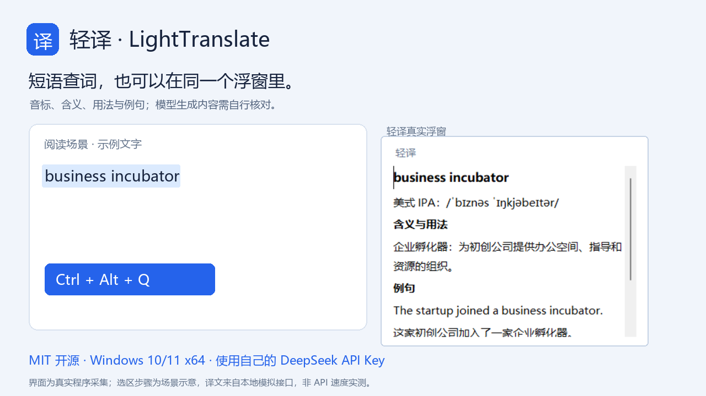

少一点来回切换
全局快捷键、鼠标旁浮窗、流式显示，支持复制、停止、重试和手动粘贴。
阅读英文网页或技术文档时，按一下 Ctrl+Alt+Q，查看流式中文译文。英文单词和短语，也能在同一个浮窗里查音标、含义和例句。
Windows 10/11 x64 · .NET Framework 4.8 · 软件免费，使用自己的 DeepSeek API Key，API 按实际用量计费。
浮窗采集自实际程序；选区步骤为场景示意，响应来自本地模拟接口，不是 DeepSeek 速度实测。制作说明
全局快捷键、鼠标旁浮窗、流式显示，支持复制、停止、重试和手动粘贴。
长文本默认译成中文；短英语候选提供 IPA、释义、用法、例句及词源。
密钥由 Windows 当前用户加密保存在本机；原文直接发给你设置的 API 服务商。
https://api.deepseek.com 和 deepseek-flash。Ctrl+Alt+Q 后松开。
查词内容由模型生成，音标和词源可能不准确。本工具不支持图片 OCR。
完整 C# 源码、图标与安装包配置均以 MIT 许可证开放。喜欢的话，欢迎 Star、分享项目，或反馈使用建议。